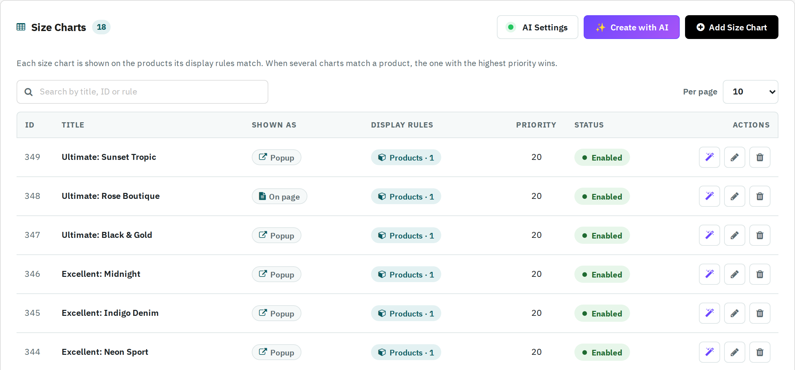

The Configure screen opens on the list of your size charts. Each size chart is shown on the products its display rules match; when several charts match a product, the one with the highest priority wins.

| Column / button | What it does |
|---|---|
| Title | The chart's internal title. Click it to edit the chart. |
| Shown as | Popup: a button on the product page opens the chart in a window. On page: the chart is shown directly on the product page. |
| Display rules | Which rules the chart uses and how many items each one lists, e.g. Categories · 1. No rule - not shown means the chart is not shown on any product yet. |
| Priority | Decides which chart a product shows when several charts match it (higher wins). |
| Status | Click Enabled / Disabled to switch a chart on or off. A disabled chart is kept but never shown in the shop. |
| Actions | The AI button opens the chart with the AI Design Assistant (see AI design assistant); the pencil edits the chart; the bin deletes it. Deleting asks for confirmation and cannot be undone. |
| Search | Type part of a title, an ID or a rule (for example Brands) to show only the matching charts. |
| Per page | How many charts each page of the list shows; the page buttons are below the list. |
| Add Size Chart | Creates a new size chart. |
| Create with AI | Creates a size chart with AI in three steps (see Create with AI). |
| AI Settings | Chooses the AI service used by the AI assistant (see AI settings). The green dot shows that the AI is ready. |